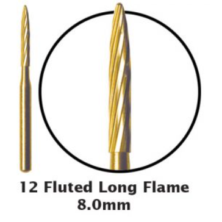
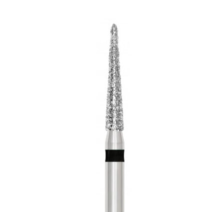
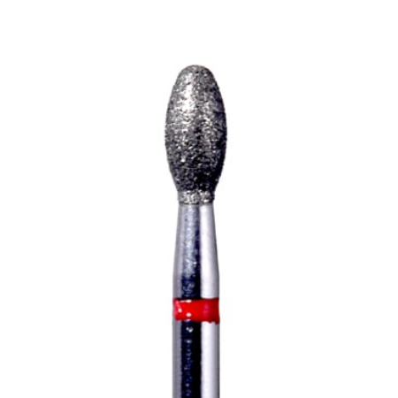
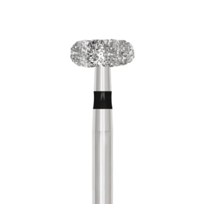
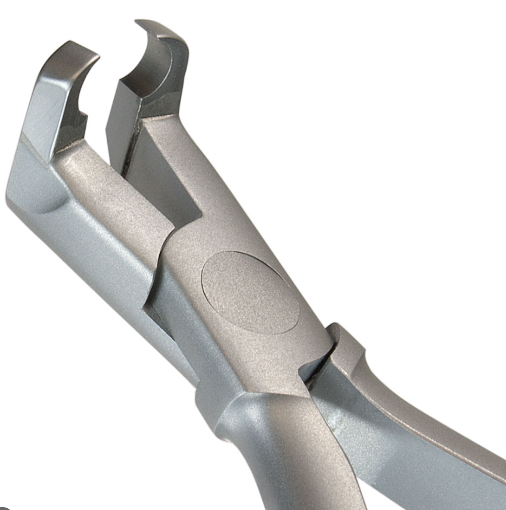
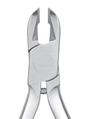
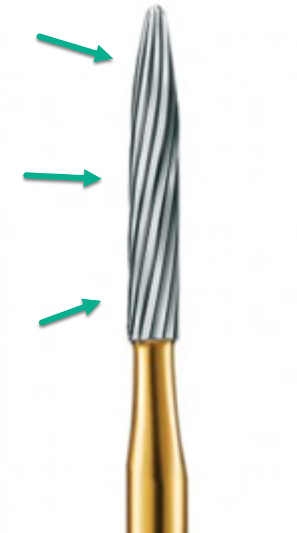
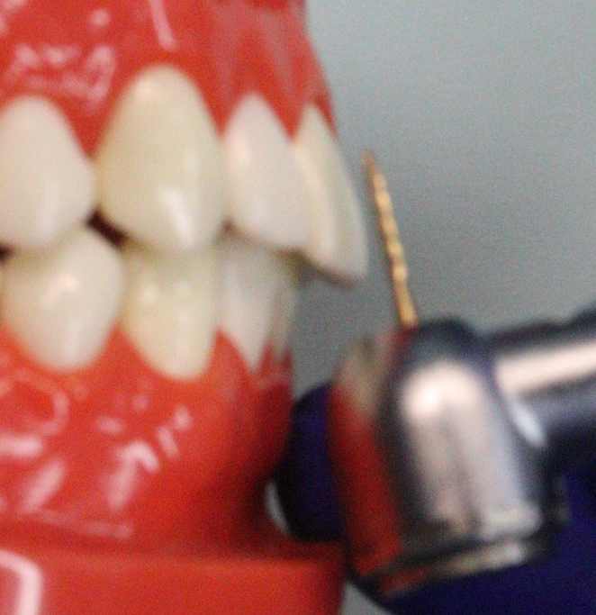
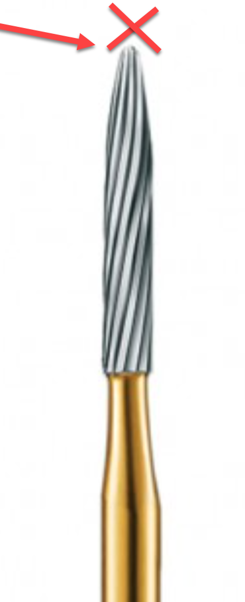
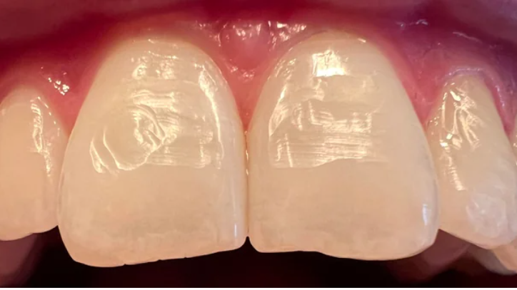

Removing brackets and adhesive cleanly and safely, protecting the enamel and the gingiva, and getting the patient ready for records and retainers.
Debond day is the finish line for the patient, so it has to go well. Two things carry the whole appointment: using the right tool for the material in front of you, and protecting what matters, the enamel and the gums. When you are unsure, you are the doctor's eyes and ears. Ask.
Using the correct bur for the material is what protects the tooth and keeps the bur working. The wrong bur damages enamel and ruins the bur.






"Hi [Patient Name], today we're going to remove your braces. Are you excited? First, I'm going to do a quick check to make sure everything looks ready. I may also ask Dr. Lee to take a look before we begin. Just let me know if you have any questions at any time during the process."
Confirm the patient is ready and address any anxieties. If the patient has concerns or questions, do not proceed until they are answered. Escalate to Dr. Lee if needed.
With LBRs: if there are space or alignment issues in the area of fixed retention, correct those first before preparing for the LBR. Without LBRs: we can still debond if we can finish with smart retainers, but consult the doctor first before removing the braces.
Explain each step to the patient before you do it. Use appropriate pressure and avoid forceful movements that could hurt or cause damage. Above all, be extremely careful not to injure the gingiva during bracket removal.
Vacuum placement. Position the extraoral vacuum at maximum power over the patient's mouth, and explain to the patient what it is for.
If you see a gray residue forming, the carbide bur is being stripped, which means it has touched ceramic. Stop immediately and replace the bur.



Use the diamond flame or football bur to remove adhesive from ceramic crowns or any remaining ceramic base on the teeth. Never use the carbide finishing bur on ceramic.
This is enamel damage from using a non-finishing bur. It does not grow back. Match the bur to the material every time.

"Hi [Patient Name], Dr. Lee is going to come in now for a quick check. He often does a little bit of enamelplasty, which is a very gentle polishing of the edges of your front teeth, to make them even and symmetrical for the best smile appearance. We'll let you know what he recommends."
Ceramic versus metal: always know which you are working with so you use the right tool. Bur selection: correct bur for enamel or ceramic, every time. Gingival health: visualize instrument placement and use gentle, controlled movements. Patient comfort: communicate throughout and address every concern.
The debond note is the final clinical documentation of active treatment and the beginning of the patient's retention phase. It needs to carry enough that another team member can open the chart later and immediately understand what was removed, what was completed, whether enameloplasty was done, what retention the patient is receiving, whether LBRs were placed and exactly where, whether the retainers are passive or making an active post-debond movement, what movement or space is being addressed, what the next appointment is for, and what to check at the next retainer visit.
"Retainer check" by itself is not enough. If there is active movement, space closure, or another specific objective after debond, document what is being moved, where it is located, and what needs to be checked next.
Use the Debond note template for the appointment, and make sure the correct treating doctor is selected before you complete the note. The note should reflect what actually happened today, not the untouched default template.
Start with what was completed during the appointment.
Complete "Debonded Braces/Aligners," for example Braces or Aligners. Do not leave this field blank.
Complete "Enameloplasty (Y/N)." If it was performed, document the area.
The retention section tells the team what type of retention the patient is receiving, for example "Retention: Active retainers." If the retainers are meant to make a final post-debond movement, that must be clearly documented. This matters most when we are closing a small residual space, making a minor post-debond movement, correcting a small alignment issue, or using an active Essix before transitioning to passive retention.
Complete "LBRs (Y, Where / N)." Do not simply write Yes. Document the exact location so it is obvious whether the patient has an upper LBR, a lower LBR, both, or none.
This is one of the most important parts of the note. If the Essix retainers are active, state exactly what they are supposed to accomplish. Do not write only "Active retainer." Use the exact tooth or area whenever possible.
The technician, doctor, and lab should not have to guess which space is being addressed.
Do not simply enter "Retainer Check." That does not tell the next technician what they are evaluating. Write the purpose of the visit instead.
The more specific the NV instructions are, the easier it is for the front desk to schedule correctly, the next tech to prepare, the doctor to know what is being evaluated, and any team member to continue treatment without reconstructing the last appointment.
After the braces are removed, the tooth chart should match the patient's current condition. Remove the braces and appliances that are no longer present, then add the retention prescription for any LBRs. If the patient has upper and lower 3-3 LBRs, the chart should visually reflect those bonded retainers.
The tooth chart should match what is actually in the patient's mouth. Do not leave braces displayed on the chart after a debond.
1. What did we do today? What was removed, cleaned, scanned, bonded, or adjusted. 2. What retention does the patient have? Essix, active Essix, LBRs, and their exact locations. 3. What happens next? What the next appointment is for, and what specifically we are checking. If the next technician has to guess, the note is not complete.
Assist or complete a full debond under supervision. The bar is correct tool selection throughout, no enamel or gingival damage, and a patient who is comfortable and informed the whole way.